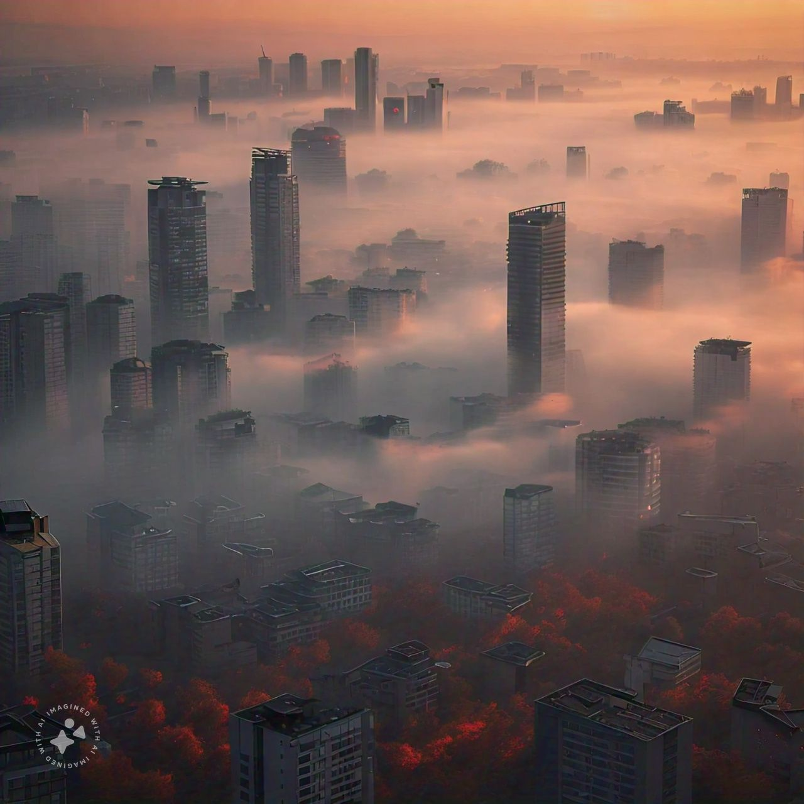

Clearing the Air: Combating Air Pollution
- Defination:
- Air pollution refers to the release of various gases, finely divided solids, or finely dispersed liquid aerosols into the atmosphere at rates that exceed the natural capacity of the environment to dissipate and dilute or absorb them.
- These substances may reach concentrations in the air that cause undesirable health, economic, or aesthetic effects.
- Air pollution
- Automobile Emissions: Exhaust gases from vehicles contribute significantly to air pollution
- Industrial Processes:Factories and power plants release pollutants into the air during production.
- Burning Fossil Fuel:Coal, oil, and natural gas combustion emit harmful gases.
- Agricultural ParticesPesticides, fertilizers, and livestock emissions.
- Control and Migration:
-
- Regulation:Stricter laws and emisions standards.
- Alternative Energy Sources:Promoting clean energy options.
- Public Awareness:Educating people about reducting pollution.
Examples:The 1984 Bhopal disaster in India released a deadly gas into the air, causingimmediate.
Home
Land pollution
Water pollution